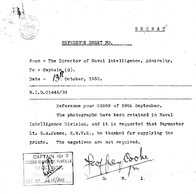
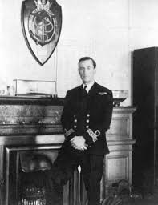
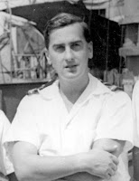

I don’t think I’m very good at knowing when to stop. When I wrote the first version of Margery Allingham's biography back in 1991 and had to leave the unsolved mystery of what went wrong in her marriage in the early 1950s it irked me. Discovering the existence of her husband’s unknown child, Tom, conceived in 1951 with lesbian icon Nancy Spain it
didn’t answer every question – in fact it posed a few more – but there was a
feeling of yes! as puzzle pieces
slipped into place. It was enough to persuade me to re-publish the biography in 2009 as The
Adventures of Margery Allingham, the title I’d always wanted but which the
original publishers didn’t quite get. And that was the first volume under the
Golden Duck imprint.

One thing led to another and more pieces of unfinished
business pushed their way insistently to the front of the publication queue
until GD volume 13, The Cruise of Naromis: August in the Baltic 1939 by my father, George Jones, caught me
unawares in a corner of the attic. That too left an irritating loose end.
If Dad had been astute enough to take 60 odd photographs of sea marks, bridges,
coastal approaches and harbours during his three week trip though Holland, Germany,
Denmark, Sweden, Norway in the last weeks before the outbreak of the Second
World War why did he not sent them to Naval Intelligence until December 1941?
He had been quick to show his photos of German warships Gneisenau and
Konigsberg to his new Captain within weeks of his first posting. The photographs had been
forwarded to the Director of Naval Intelligence and he’d been thanked for
supplying them.
So what about the rest of them? Why were they not sent? I've not managed to stop wondering
In the title of my previous blog post, introducing Naromis, I made a facetious reference to
James Bond. I didn’t actually expect that I would find
the answer to my question in a book about Ian Fleming. It’s
called Ian Fleming’s Commandos by
Nicholas Rankin and I recommend it for its research and its readability. Ian Lancaster Fleming (1908-1964) joined the RNVR in the
same month as my father, George Jones (1918-1983): both could describe
themselves as “stockbrokers” and neither enrolment was mainstream. There the
resemblance ends. Dad was a 21 year old tenant farmer’s son, just at the end of
three years as an articled clerk in Birmingham and working for a distant relation whose
business activities were made complex (and more than a little flaky) by his
bankruptcy. Fleming was the 31 year old son of a Tory MP, educated at Eton, rejecting
employment in the family merchant bank in favour of a junior partnership in a
firm of City of London stockbrokers. Both men had
lost their fathers when young, both wrote slightly arty poetry but neither of
those attributes was unusual in the 1930s generation.
 |
| The signatory is the Deputy Director of Naval Intelligence Admiral Godfrey's number two |
{kind=link}
Dad, though a keen sailor, had poor eyesight and was not
optimistic about his chances of acceptance into the RNVSR (the "Yachtsman’s
Reserve") when he applied in the aftermath of Hitler’s invasion of
Czechoslovakia in March 1939. He was lucky that the chaos of aborted
mobilisation at the time of the Munich crisis the previous autumn had persuaded
the Navy to institute a supplementary list for accountants, volunteers with clerical skills who could become “pussers” – an essential but definitely non-prestigious
form of life. He received his commission in July 1939. So did Fleming -- except that the latter had not volunteered, he had been head-hunted by the Governor of the Bank of England as a personal assistant to the Director
of Naval Intelligence, Admiral Sir John Godfrey. Fleming was attached to the RNVR (Special branch) which
was for people who might be useful but wouldn’t be going to sea.
 |
| Ian Fleming at the Admiralty. Photo used in his friend Robert Harling's memoir |
{kind=link}
Both men, as it turned out, were good at their jobs. Fleming
stayed in post throughout the war as “fixer” for the Director of Naval Intelligence.
First it was Admiral Godfrey (the model for ‘M’) then
Admiral Rushbrooke, a less proactive Director, where Fleming’s personal influence
was possibly greater. Admiral Godfrey, a sea-going commander had much leeway to
make up when he arrived at the DNI. The department had grown slack during the years of peace and one astonishing lacuna concerned
topography. Naval Intelligence had no data on places where forces might wish to
land. One of the reasons the Dieppe raid in August 1942 was a disaster is that landings had been practised on flat sandy
beaches whereas the operational beach here was steep and chalky. Tanks stuck. When Naval forces steamed
to Norway in April 1940 someone had rushed round Thomas Cook’s gathering
tourist brochures and maps. April, it was assumed, meant spring so when an
RNVR sub-lieutenant named Patrick Dalsel-Jobs produced his own photos of Arctic
Norway in previous April there was incredulity. No one had expected to encounter thick,
white snow. When Churchill was shown the Norway folder it was empty. The letters SFA adorned the cover: Sweet Fanny
Adams. Earlier in the 1930s Dalsel-Jobs had offered to chart the Norwegian fjords for the Admiralty but no one had been interested. Dad had gone exploring when
Naromis refuelled in Farsund on August
28th 1939. He brought home his own photos of the approaches
to the fjord and its harbour but they were not wanted.
 |
| George Jones in 1943 Captain's Secretary |
Admiral Godfrey and Ian Fleming set to change this and by the end of 1940 Godfrey had set up the Inter-Services
Topographical department. It was a universities-led
exercise which eventually produced 58 scholarly volumes but appeal for contributions extended far beyond the academic community. Fleming was a consistent advocate for photographs. In 1941 the BBC Home service appealed for
private holiday photos of beach scenes in Europe and when Dad
sent his own strategically relevant batch of 61 photos in December it was in response to Weekly
Intelligence Report number 80. One of Fleming’s earliest innovations in the
late summer of 1939 had been commissioning his RNVR friend Robert Harling to re-design the Admiralty Weekly
Intelligence Reports so that they would be read in every ship’s wardroom. This initiative had
clearly been a success. The topographical volume on Norway appeared in 1943.
You may remember from a previous blog that I explained Nicci Gerrard's and my failure to keep our date for the John's Campaign farewell dinner. That dinner recedes ever further into the future though we theoretically have control of our choices. Dad and Ian Fleming had signed up "for the duration", they could not know when they would stop. Well before the war ended both of them knew what they were going to do when their lives were handed back to them. Dad was going to get back to Waldringfield and a life of small boats: Fleming was going to move to Jamaica and "write the spy story to end all spy stories". Which is what each of them did. Such admirable examples.